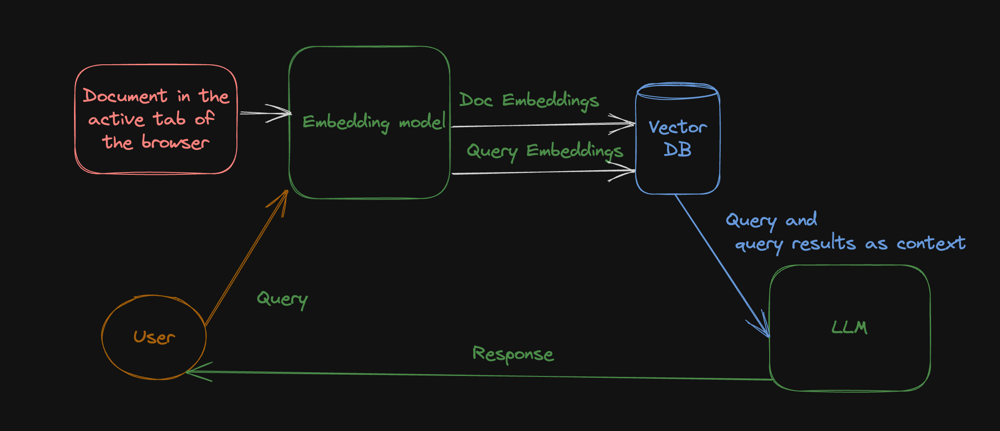
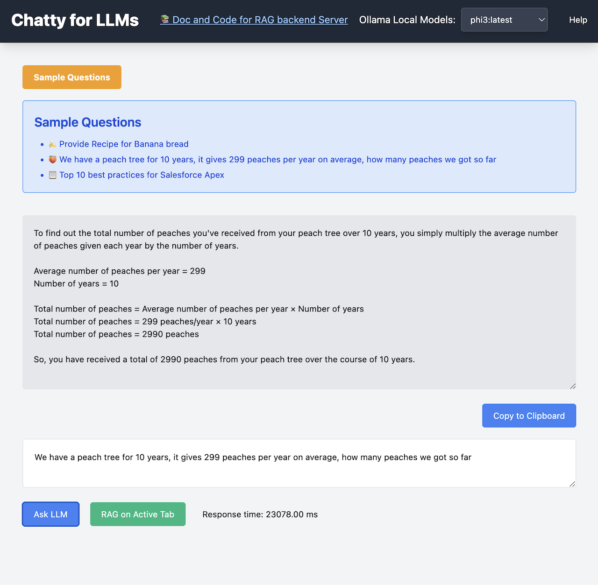
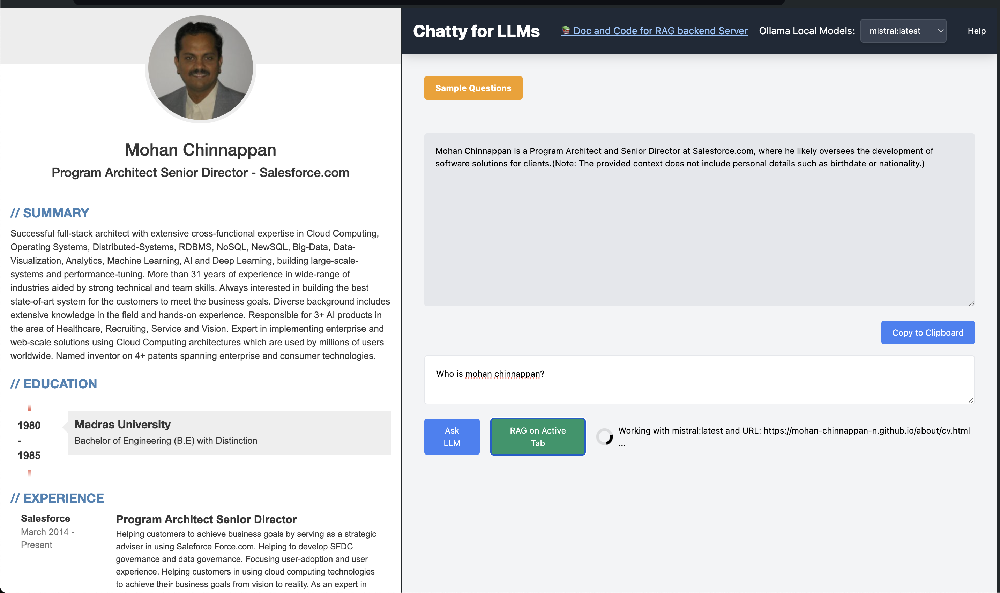

About Chatty for LLMs
Welcome to our Chatty for LLMs! This Chrome Extension is designed to help to chat with your LLMs running locally using Ollama and also supports RAG (Retrieval-Augmented Generation)
Demo of using this Chrome Extension
Features
- 🛠️You can select a LLM running on your local machine via Ollama
- 📈 You can run RAG (Retrieval-Augmented Generation) on HTML page in your active tab. This will use your selected LLM for RAG 
How to Use
To get started with our extension, follow these simple steps:
- 🔹 Step 1: Select your local LLM running using Ollama. You need run the following commands on local machine:
export OLLAMA_ORIGINS=chrome-extension://* ollama serve - 🔹Step:2 You can check the models running on your local machine by running
ollama ls --------------------------------------------------------- NAME ID SIZE MODIFIED nomic-embed-text:latest 0a109f422b47 274 MB 4 months ago phi3:latest a2c89ceaed85 2.3 GB 4 months ago llama2:latest 78e26419b446 3.8 GB 4 months ago llama3:latest a6990ed6be41 4.7 GB 4 months ago mistral:latest 61e88e884507 4.1 GB 6 months ago tinyllama:latest 2644915ede35 637 MB 6 months ago - 🔹 Step 3: Now you are all set to Ask LLM 
- 🔹 Step 4: To Run RAG you need to run a local server: Details are HERE
- 🔹 Step 5: Once RAG local server is running, you ask questions about html page in the active tab 
About RAG
What is RAG?
Retrieval-Augmented Generation (RAG) is a technique in natural language processing (NLP) that combines the strengths of information retrieval and text generation models. It aims to improve the accuracy and relevance of generated responses or content by grounding the generation process in retrieved data.
How RAG Works:
- Retrieval: The system retrieves relevant documents or information from a large dataset based on the given query. This step is similar to how search engines find the most relevant results.
- Augmented Generation: The retrieved information is then used by a text generation model to create a response or content. The model’s output is informed by both the query and the retrieved data, leading to more accurate and contextually relevant results.
Applications of RAG:
- Question Answering: Providing accurate answers to complex questions by using relevant documents.
- Chatbots: Enhancing chatbot responses with specific, relevant information.
- Content Creation: Assisting in the generation of articles or summaries based on precise data.
Benefits of RAG:
- Contextual Accuracy: Produces factually correct and relevant content by grounding in actual data.
- Handling Specific Queries: Efficiently manages queries requiring specialized knowledge beyond the general training data of the model.
Credits
- The paper by Google: Attention Is All You Need
- The paper by Meta: Retrieval-Augmented Generation for Knowledge-Intensive NLP Tasks